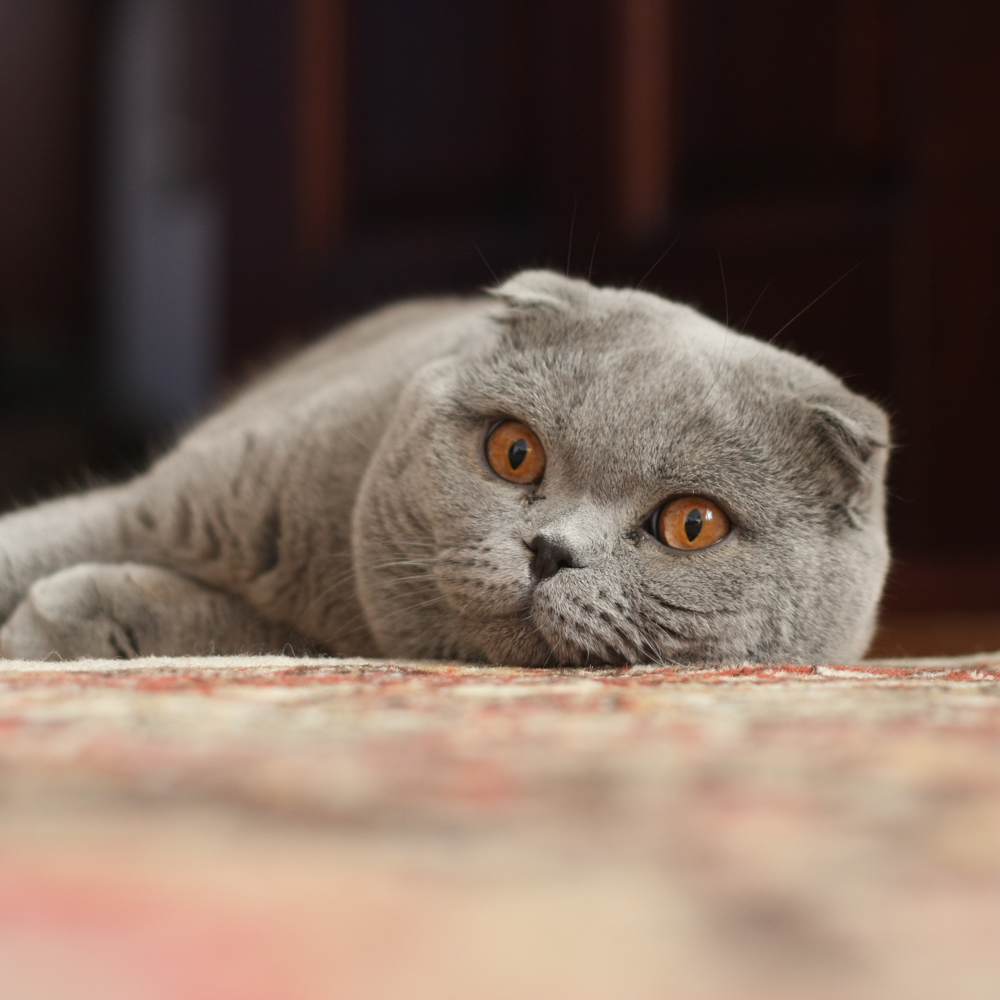

Scottish Fold
The original Scottish Fold was a white barn cat named Susie, who was found at a farm near Coupar Angus in Perthshire, Scotland, in 1961. Susie's ears had an unusual fold in their middle, making her resemble an owl. When Susie had kittens, two of them were born with folded ears, and one was acquired by William Ross, a neighbouring farmer and cat-fancier.Ross registered the breed with the Governing Council of the Cat Fancy (GCCF) in the United Kingdom in 1966 and started to breed Scottish Fold kittens with the help of geneticist Pat Turner. The breeding program produced 76 kittens in the first three years—42 with folded ears and 34 with straight ears. The conclusion from this was that the ear mutation is due to a simple dominant gene.
Susie's only reproducing offspring was a female Fold named Snooks who was also white; a second kitten was neutered shortly after birth. Three months after Snooks' birth, Susie was killed by a car. All Scottish Fold cats share a common ancestry to Susie.